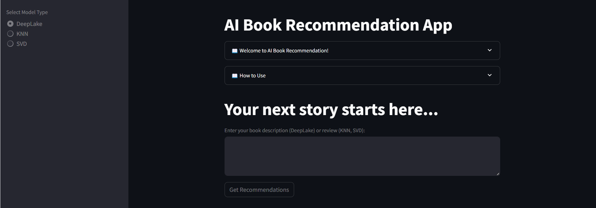

|
|
Liang Gao
Master's Student in Data Science
The George Washington University
|
I am currently a Master's student in Data Science at Columbian College of Arts and Sciences in The George Washington University, and I will graduate in December 2024.
My major courses include: Machine Learning, Deep Learning, Natural Language Processing (NLP), Time Serires Analysis & Modeling, Data Visualization, and Data Warehousing.
Through these courses and related assignments and projects, I dived into data analysis using Python, Pytorch, SQL, and R. These project experience enhanced my ability to handle large datasets and extract meaningful insights.
Before joinging GWU, I obtained a Master's degree in Finance from Freeman School of Business at Tulane University.
Major courses include:
Risk Management, Financial Modeling, Fixed Income Analytics & Model, Equity Analysis, and Accounting Analytics,
which equipped me with robust quantitative skills, enabling me to effectively analyze and interpret financial data.
I had trained to use Excel to perform financial data analysis, building financial models, and make prediction, and also make professional business presentation.
I obtained my bachelor degrees from University of Liverpool and Xi'an Jiaotong Liverpool University.
Selected Techinical Projects
|
Predicting temperature with regression and time-series models
In this individual term project, I utilized a dataset comprising 17,545 observations to forecaste temperature trends in Germany,
and employ advanced time series techniques including multiple linear regression and the Seasonal Autoregressive Integrated Moving Average (SARIMA) model.
To capture the underlying trend and seasonal variations in temperature, I meticulously adjusted the parameters of these models, ensuring an enhanced sensitivity analysis.
This rigorous approach enabled me to achieve an exceptional adjusted R2 value of 0.97, indicating a highly accurate fit of the model to the observed data.
Github Link | Report
|
|
Biomedical image segmentation with CNN architecture
In this multi-organ biomedical image segmentation task, I used U-Net, a specialized convolutional neural network (CNN) architecture, implemented within the PyTorch framework. My responsibilities encompassed preprocessing medical imaging data to ensure optimal input quality, implementing the model, and meticulously tuning the parameters to enhance its performance. Through these efforts, I achieved a high Dice coefficient of 0.93, indicating a very precise overlap between the segmentation results produced by the model and the ground truth, thereby underscoring the effectiveness of our approach in medical image analysis.
Github Link | Report
|
|
AI Book recommendation system with Transformer
I developed an advanced book recommendation system by utilizing the Transformer architecture, specifically leveraging pre-trained BERT models. This system employed sophisticated natural language processing (NLP) techniques to analyze text from book reviews, significantly enhancing the accuracy of its recommendations. To make the system accessible and user-friendly, I also designed and implemented an interaction application using Streamlit. This application provided a seamless user experience, allowing users to easily interact with the system to find book recommendations tailored to their preferences.
Github Link | Report

|
Business Projects
|
L’Oreal Brandstorm 2019
Conducted market surveys and identified a compelling new product idea, which led to the development of a detailed business plan. I further enhanced the plan by conducting a SWOT analysis to assess the strengths, weaknesses, opportunities, and threats related to the new product concept. This comprehensive preparation and strategic planning culminated in a presentation of our business plan, which successfully secured a top 100 ranking among 2,000 participating teams in a competitive evaluation.
Certificate
|
|
Cauchy Design | College Student Entrepreneur Project (Mar 2018 - Jun 2019)
I successfully increased quarterly revenue by 10% through the strategic adjustment of our sales strategy and operational changes. By utilizing after-sales feedback data, we were able to adapt our market plans effectively, which significantly enhanced brand awareness. Additionally, I focused on developing the professionalism of our team members by providing extensive training in customer service. This comprehensive approach not only improved our financial performance but also strengthened our team's ability to engage with customers, further driving our success in the market.
|
Finance Internship
|
Finance Intern at SEG Automotive China (Sep 2020 - Dec 2020)
Streamlined the internal audit process, achieving a 20% reduction in audit time by integrating Excel-based documents for tracking accounting receivables. Additionally, I enhanced invoice processing efficiency by 30% through the skilled use of a digital scanning system. These improvements not only optimized our workflows but also significantly reduced the time and resources required for these critical financial operations, leading to greater overall efficiency in our financial management practices.
|
|
Finance Intern, China Resource Cement (Jul 2020 - Aug 2020)
Collaborated with colleagues to enhance the efficiency of our expense reporting procedures, achieving a notable 20% reduction in processing time. Additionally, I took charge of ensuring the accurate accounting of expense reimbursements, covering categories such as travel and welfare expenses. My efforts resulted in zero discrepancies and maintained strict adherence to company policies. This initiative not only streamlined our financial operations but also reinforced our commitment to compliance and fiscal responsibility.
|

{kind=link}